The device keeps your map setting. Only the map tile requests leave the device. The EDM data does not leave the device.
If the file has no CRS, the Map button does not show. A short note tells you why.
GL labels and TD markers
Each wellhead label shows the ground level (GL) from the EDM file. Each wellbore and plan has a TD marker at its end.
Open the site 3D view. Tap a well or a site.
Read the wellhead label, for example SYN-1 · GL 120.0 m.
If the file has no ground level, the label shows GL n/a. The game does not guess a value.
Find the ◆ TD marker at the end of each wellbore.
On the laptop, read the full label: MD, TVD, TVDSS and the reference datum.
On the phone, tap the TD chip to see the full label.
Device
Example TD label (test data)
Laptop
◆ TD MD 2,950.0 · TVD 2,903.9 · TVDSS 2,868.9 m · ref RKB 35.0 m
Phone
◆ TD 2,950.0 m (tap for the full label)
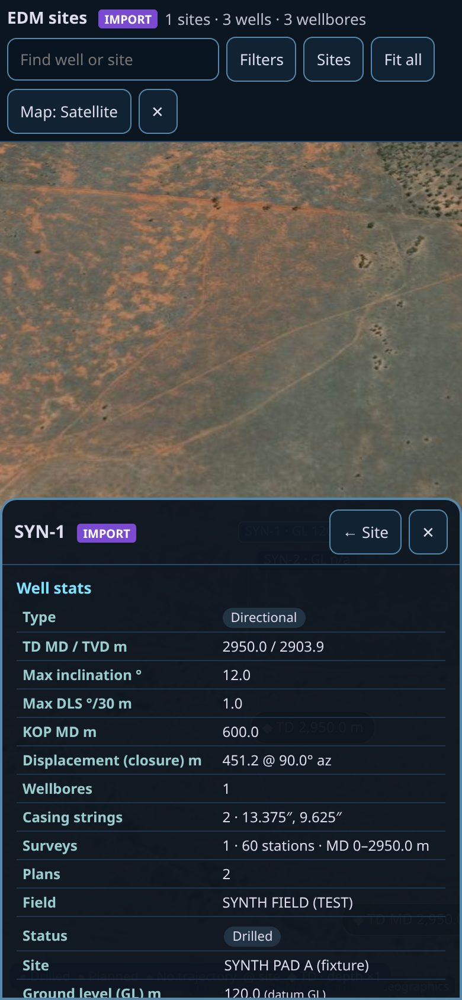
Figure 14. Phone (390 × 844).
Phone and laptop site sync
Site sync moves your saved EDM sites from one device to the other with a sync file. WITSML log-in data is never put in the file.
Make the sync file (first device)
On the start screen, tap Sync.
Tap Make sync file. Keep the file.
Open the sync file (second device)
Send the file to the second device yourself.
On the start screen, tap Sync.
Tap Open sync file. Select the file.
The saved sites show on the start screen.
The sync file also carries your custom rigs from Rig Builder. If the same site or rig is on both devices, the newer copy is kept.
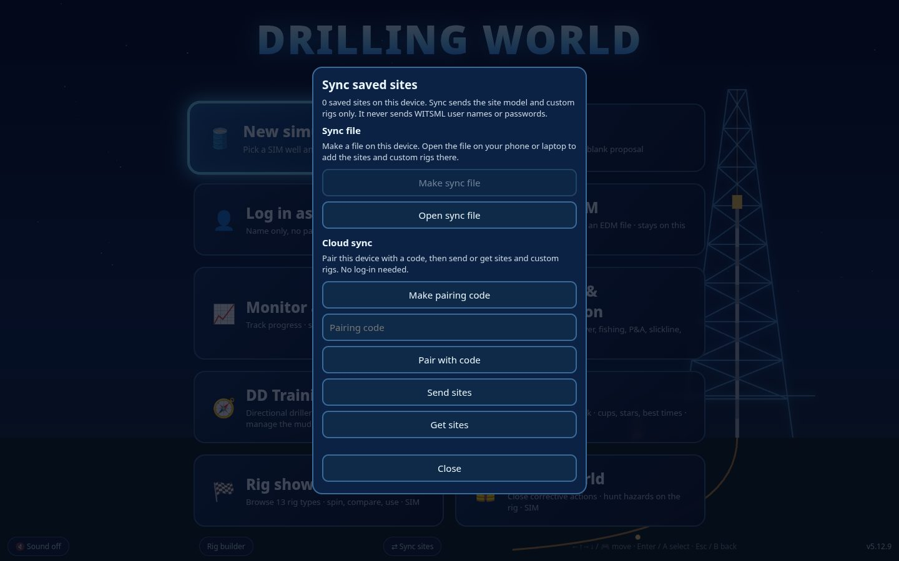
Figure 15a. Laptop (1440 × 900). Sync saved sites panel with the sync file and Cloud sync parts.
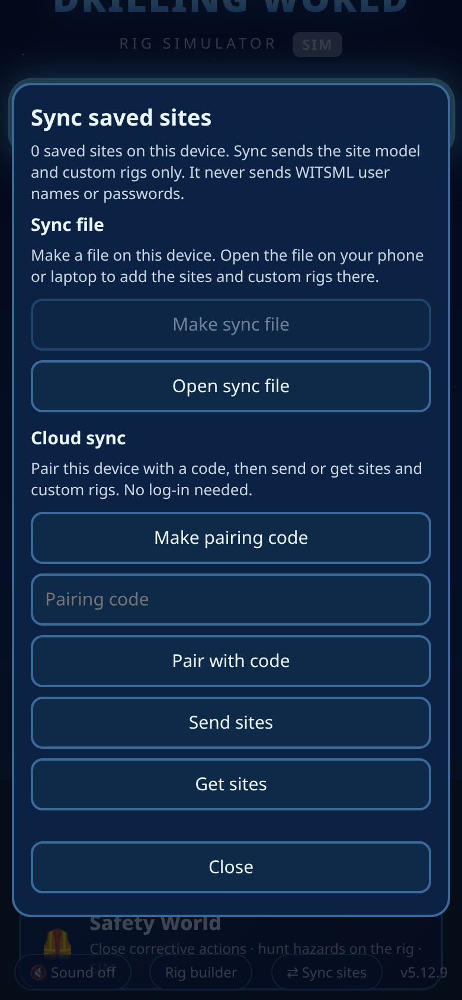
Figure 15b. Phone (390 × 844).
Cloud sync (no sync file)
Cloud sync sends your saved sites and custom rigs through the Robotyx server. You do not need a log-in. Each device pairs with a 10-character code.
Pair the first device
Tap Sync.
Tap Make pairing code. Write down the code.
Tap Send sites.
Pair the second device
Tap Sync.
Type the code in Pairing code. Tap Pair with code.
Tap Get sites. The saved sites and custom rigs show.
Cloud sync never sends WITSML user names or passwords. The server refuses data that looks like a credential. Keep the pairing code private.
If cloud sync is not available, the panel shows "Cloud sync is off on this site". Use a sync file.
WITSML dashboard and image logs
The WITSML dashboard shows drilling and formation logs in vertical tracks, side by side. It also shows image logs from array or sector curves. Without a store it shows SIM data. It shows LIVE only when it reads new data from a real WITSML store.
Open the dashboard
On the start screen, tap 📊 WITSML dashboard.
Or, in Settings, tap 📊 WITSML dashboard (logs + image logs).
Or, add ?wdash at the end of the address.
Read the logs
The default tracks are Drilling (ROP, WOB), Rotary (RPM, torque), Hydraulics (SPP, flow), Gamma (GR) and Resistivity. The track header shows the newest value and the scale. On the phone, swipe the tracks left and right.
Tap Depth or Time to change the index.
Tap + or - to zoom. You can also use the mouse wheel or drag the tracks.
Tap Follow to keep the newest data on the screen. When you drag, Follow stops. Tap Follow again to start it.
Figure 17a. Laptop (1440 × 900). Time mode with SIM data.
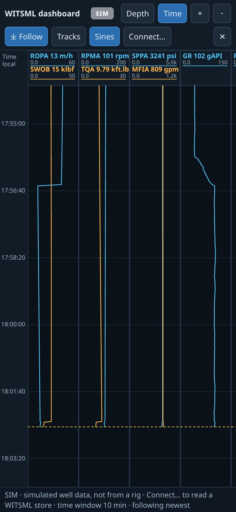
Figure 17b. Phone (390 × 844).
Image logs
An image track unwraps the borehole wall from 0° to 360°. The dashboard finds array curves and sector curve families (for example GRIM_01 to GRIM_16). Light colours are high values. Tap Sines to show the fitted sinusoids and the dip/azimuth labels (depth mode only).
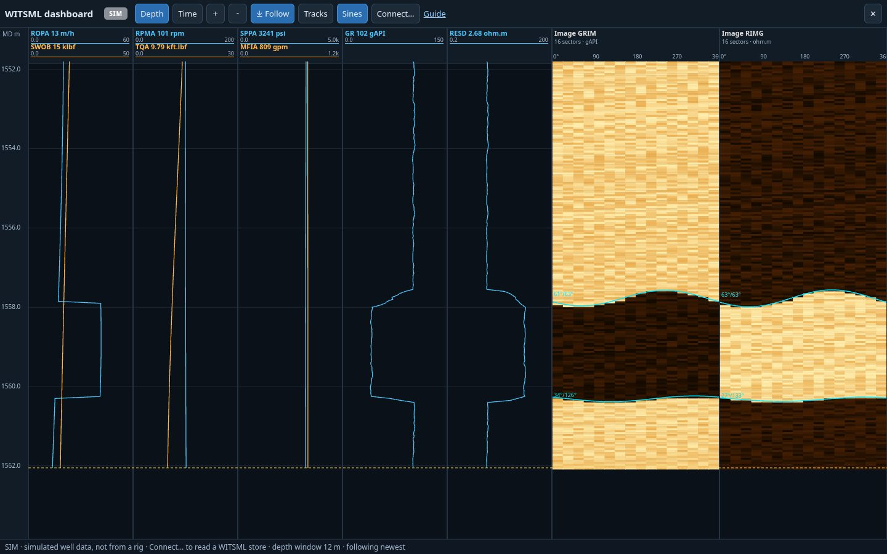
Figure 18a. Laptop (1440 × 900). Image tracks with sinusoids, zoomed in.
If the log has no array or sector curves, the image track shows "No image (array / sector) curves". This is correct for logs without image data.
Change tracks, curves and scales
Tap Tracks.
Add or remove a track or a curve. Type a minimum and a maximum, or leave them empty for auto scale. Select log for a log scale.
Tap Default tracks to go back to the default set. Tap Done.
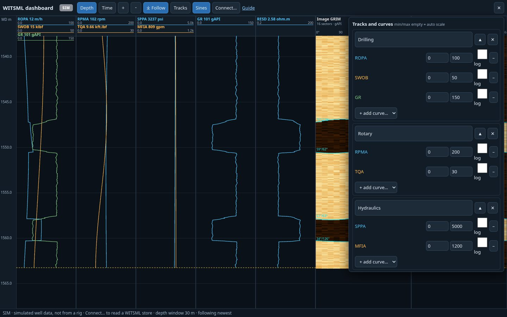
Figure 19a. Laptop (1440 × 900). Track and curve picker.
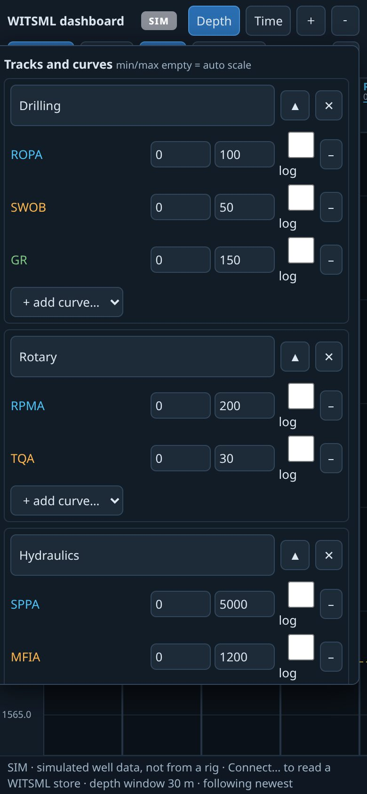
Figure 19b. Phone (390 × 844).
Connect to a WITSML store
Tap Connect….
Select WITSML 1.4.1.1 (SOAP).
Select the route: Through a proxy or Direct from browser.
Type the store URL, user name and password. Tap Connect.
Select the well, the wellbore and the log. Tap Show this log.
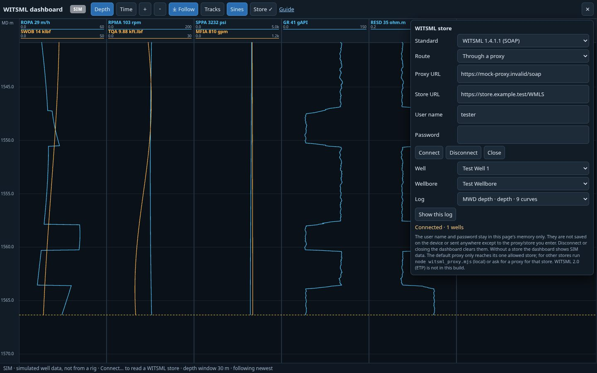
Figure 20a. Laptop (1440 × 900). Connect panel. The values are test values.
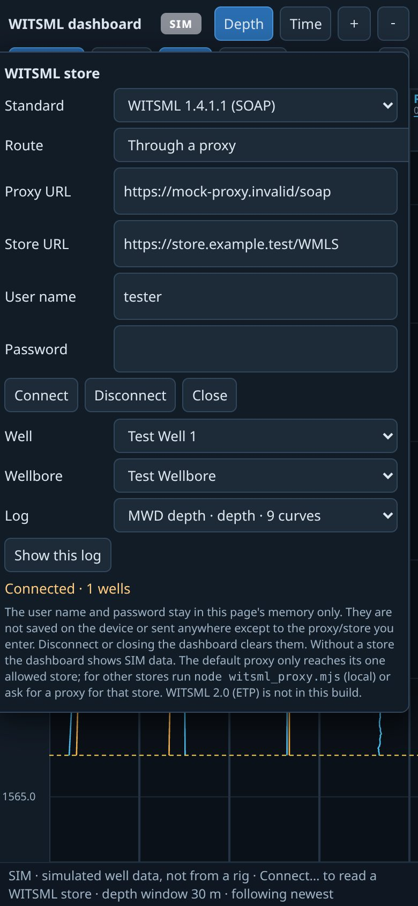
Figure 20b. Phone (390 × 844).
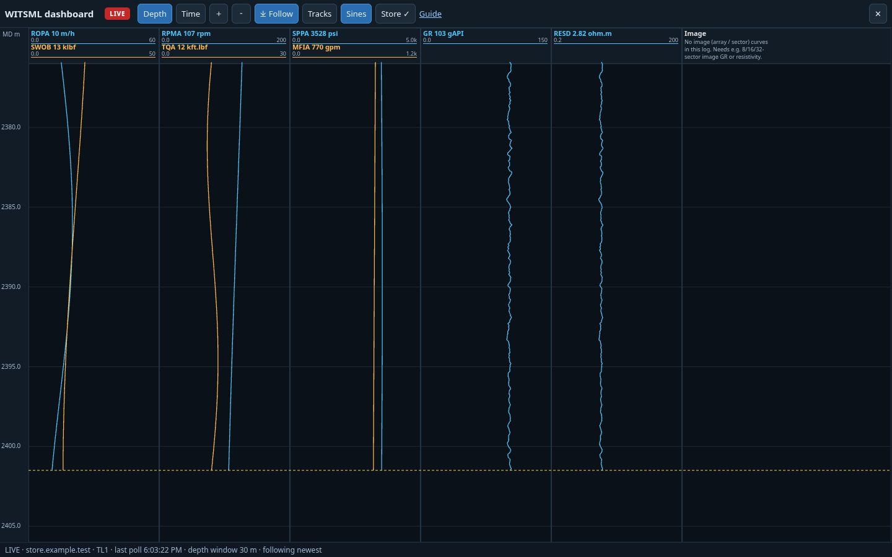
Figure 21a. Laptop (1440 × 900). LIVE tag with a test store.
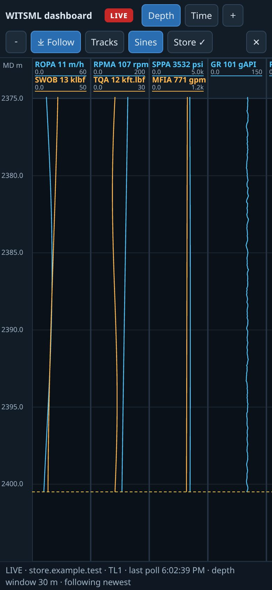
Figure 21b. Phone (390 × 844).
The dashboard remembers your connection on this device only: route, proxy URL, store URL, user name and your last-picked well, wellbore and log. The password is kept until you close the browser tab. Tick Remember password on this device to keep it encrypted on this device so the dashboard reconnects by itself when you open it; leave the password blank to reuse the saved one. If the store logs you out or times out, the dashboard retries once with the saved login. The password is never synced, exported or logged. Use Forget saved connection on a shared computer to clear everything. If a step fails, the status line says whether it was a login problem, a proxy/CORS problem, an empty result or a store (SOAP) error.
A browser can read a store directly only if the store allows CORS. If it does not, use a proxy. The default proxy reaches one allowed store only. For a different store, run node witsml_proxy.mjs on your computer and use http://localhost:8796/soap. WITSML 2.0 (ETP) is not in this version.
The tag is LIVE only when all these are true: a store is connected, the log type agrees with the mode, and new data came in the last 2 minutes. If not, the tag shows the cause.